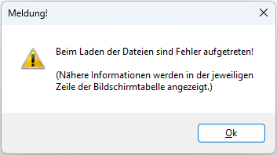
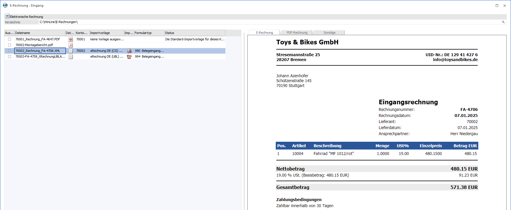
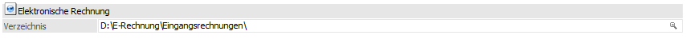
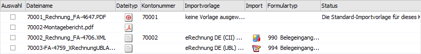
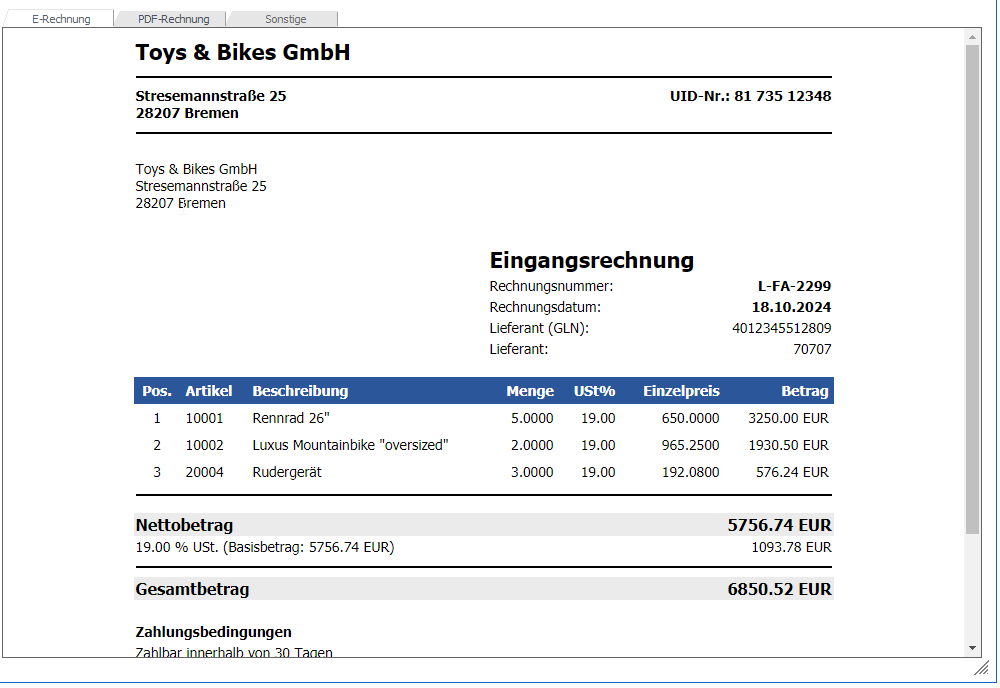
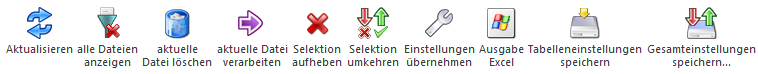
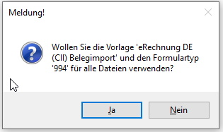
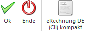

Im Programm…
1 WinLine FIBU
1 Buchen
1 E-Rechnung Eingang
… oder…
1 WinLine FAKT
1 Erfassen
1 E-Rechnung Eingang
… kann aus einem gewählten Verzeichnis der Import von E-Rechnungen als Buchung oder Beleg vorgenommen werden. Die Dateien aus dem Verzeichnis werden beim Aufruf geprüft und entsprechen diese nicht dem Aufbau einer E-Rechnung, erhält der Benutzer eine Hinweismeldung, die mit OK bestätigt werden muss.


Elektronische Rechnung

Ø Verzeichnis
Hinterlegung des Verzeichnisses aus dem die Dateien für den Import angezeigt/herangezogen werden sollen.
Elektronische Rechnung Tabelle

Ø Auswahl
Über die Checkbox wird gesteuert, ob die Datei übernommen/importiert werden soll.
Ø Dateiname
Anzeige des Dateinamens aus dem selektierten Verzeichnis.
Ø Dateityp
Über das Icon ist ersichtlich um was für ein Dateityp es sich handelt. Beim Dateityp gibt es nur XML, PDF, ZUGFeRD-PDF und Sonstige.
Ø Kontonummer
Wurde ein Kreditorenkonto aus der E-Rechnung ermittelt, wird dieses in die Spalte eingetragen. Damit werden auch die Importeinstellungen lt. E-Billing-Schema verwendet, falls vorhanden.
Hinweis
Vor dem Import einer E-Rechnung findet eine automatische Kreditorensuche statt, um beim Import ein entsprechendes E-Billing Schema verwenden zu können. Die WinLine prüft hier alle zur Syntax passenden Importvorlagen ab, an welcher Stelle die Variable der Kontonummer in der XML-Struktur zugewiesen ist, da vor dem eigentlichen Import noch nicht klar ist, mit welcher Importvorlage importiert werden soll.
Eine mehrfache Hinterlegung der Variable in den Importvorlagen ist möglich (z.B. bei den XML-tags für die Kontonummer, Kontobezeichnung, GLN und UID). Für die Kreditorenfindung wird zunächst geprüft, ob eine gültige Kontonummer eingetragen ist. Ist dies nicht der Fall, wird im Kontenstamm das entsprechende Kreditorenkonto in alternativen Feldern gesucht, wobei die UID, die Kontobezeichnung und die GLN berücksichtigt werden.
Ø Importvorlage
An dieser Stelle wird definiert, mit welcher Importvorlage die E-Rechnung importiert werden soll. Konnte die Kreditorennummer aus der E-Rechnung ermittelt werden oder wurde manuell ein Kreditor in die Spalte "Kontonummer" eingetragen, wird die Importvorlage aus dem E-Billing Schema vorbelegt, falls dort eine Vorlage hinterlegt wurde.
Ø Import
Über das Icon wird angezeigt, ob es sich um einen Beleg- oder Buchungsimport handelt.
Ø Formulartyp
Hier kann der gewünschte Archiv-Formulartyp ausgewählt werden. Konnte die Kreditorennummer aus der E-Rechnung ermittelt werden oder wurde manuell ein Kreditor in die Spalte "Kontonummer" eingetragen, wird der Formulartyp aus dem E-Billing Schema vorbelegt, falls dort ein Formulartyp hinterlegt wurde.
Ø Status
In der Spalte "Status" wird eine Meldung ausgegeben, wenn beim Öffnen des Menüpunkts die Meldung angezeigt wurde, dass nicht alle Dateien geladen werden konnten.
Ebenfalls wird eine Meldung angezeigt, wenn die Importeinstellungen lt. E-Billing Schema nicht zur Eingangsrechnung passen (z.B. UBL Importvorlage lt. Schema und CII-Rechnung im Eingang).
Elektronische Rechnung Vorschau

Ø E-Rechnung
Im Register "E-Rechnung" wird die gewählte XML-Datei bzw. E-Rechnung (d.h. die in der PDF-Datei eingebettete XML) in einer lesbaren Ansicht dargestellt.
Hinweis
Über den Button "Ansicht" kann zwischen den zur Verfügung stehenden Stylesheet-Ansichten gewechselt werden.
Ø PDF-Rechnung
Anzeige von PDF-Dateien. Ist es eine PDF-Datei mit eingebetteter XML, so kann die PDF-Datei in diesem Register angezeigt und in dem Register E-Rechnung wird die XML angezeigt werden.
Ø Sonstige
Es wird versucht die anderen Dateitypen außer PDF und XML zu visualisieren. Das Register steht nur zur Verfügung, wenn es sich nicht um eine XML oder PDF Datei handelt. Ein Wechsel in die anderen Register ist nicht möglich
Tabellenbuttons

Ø Aktualisieren
Das angegebene Verzeichnis wird neu geladen.
Ø alle Dateien anzeigen
Im Standard werden nur PDF und XML-Dateien in der Tabelle angezeigt. Über den Button werden die anderen Dateien aus dem angegebenen Verzeichnis in der Tabelle angezeigt.
Ø aktuelle Datei löschen
Die Datei, die gerade selektiert ist wird physikalisch gelöscht
Ø aktuelle Datei verarbeiten
Die Datei wird importiert, die gerade selektiert ist.
Ø Selektion aufheben
Alle zur Auswahl gekennzeichneten Zeilen werden zurückgesetzt
Ø Selektion umkehren
Durch das Anklicken des "Selektion umkehren"-Buttons werden alle aktivierten Zeilen deaktiviert und alle deaktivierten Zeilen aktiviert.
Ø Einstellungen übernehmen
Durch Anwählen des Buttons werden die Einstellungen (Importvorlage und Formulartyp) aus der Zeile, wo sich der Fokus befindet an alle anderen Zeilen übergeben. Es kommt ein Hinweis und beim Bestätigen mit Ja erfolgt die Übergabe der Einstellungen

Ø Ausgabe Excel
Durch Anwahl des Buttons "Ausgabe Excel" wird der Inhalt der Tabelle an Microsoft Excel übergeben.
Ø Tabelleneinstellungen speichern
Die Spalten einer Tabelle können grundsätzlich an beliebige Positionen verschoben, bzw. in der Breite entsprechend angepasst werden. Durch Anwahl des Buttons "Tabelleneinstellungen speichern" werden die Einstellungen benutzerspezifisch gespeichert und bei dem nächsten Aufruf des Programmpunktes wieder vorgeschlagen.
Ø Gesamteinstellungen speichern
Im Gegensatz zu "Tabelleneinstellungen speichern" können mit "Gesamteinstellungen speichern" mehrere Tabellenaufbauten gespeichert und nach Wunsch geladen werden. Zusätzlich werden Sonderfunktionen der Tabelle (z.B. "Spalte gruppieren") ebenfalls bei der Speicherung bedacht.
Buttons

Ø OK
Durch Anklicken des Buttons "Ok" bzw. der Taste F5 werden die selektierten Dateien importiert.
Ø Ende
Durch Anklicken des Buttons "Ende" bzw. der Taste ESC wird das Fenster geschlossen und kein Import durchgeführt.
Ø Ansicht
Mit Hilfe des Aufklapp-Buttons "Ansicht" kann die Darstellung innerhalb des Registers "E-Rechnung" über sogenannte Stylesheets (Darstellung der XML-Datei in HTML Ansicht) gesteuert werden. Falls ein Stylesheet im E-Billing Schema definiert, wird dieses zur Darstellung herangezogen. Ansonsten wird das Standard-Stylesheet verwendet alle zur Syntax passenden Stylesheets zur Auswahl angeboten.
ü - XML-Ansicht (steht immer zur
Verfügung)
Durch Auswahl des Eintrags "XML-Ansicht" wird der Inhalt der Datei
1 zu 1 dargestellt.
ü - alle Ansichten anzeigen (steht immer zur
Verfügung)
Die WinLine bietet im ersten Schritt die lt. Datensatzaufbau
passenden Ansichten in der Auswahl an. Mit Hilfe des Eintrags "alle Ansichten
anzeigen" werden auch alle weiteren Ansichten angezeigt.
ü - Stylesheet lt. E-Rechnung
Diese
Auswahl steht nur zur Verfügung, wenn innerhalb der E-Rechnung auf ein
Stylesheet verwiesen wird. Sollte die xslt-Datei nicht existieren, so wird in
der Anzeige der Inhalt der E-Rechnung 1 zu 1 dargestellt.
ü  - CII-Ansicht
- CII-Ansicht
Es handelt sich bei dem
Eintrag um ein Stylesheet aus dem Bereich "E-Billing Stylesheets" des Typs
"CII".
ü - UBL-Ansicht
Es handelt sich bei dem
Eintrag um ein Stylesheet aus dem Bereich "E-Billing Stylesheets" des Typs
"UBL".
ü - EBInvoice-Ansicht
Es handelt sich bei
dem Eintrag um ein Stylesheet aus dem Bereich "E-Billing Stylesheets" des Typs
"EBInvoice".
ü  - Sonstige Ansicht
- Sonstige Ansicht
Es handelt sich bei
dem Eintrag um ein Stylesheet aus dem Bereich "E-Billing Stylesheets" des Typs
"Sonstige". Ob ein sonstiges Style-Sheet passendes
Hinweis
Wird ein Stylesheet lt. E-Rechnung mitgeliefert, so wird dieses im ersten Schritt als Standard-Ansicht verwendet. Ansonsten jenes, welches lt. E-Billing-Schema definiert wurde. Wurde dort keines hinterlegt, wird das Stylesheets angewendet, welches zur Syntax als "Standard" definiert wurde.
Bei der Ermittlung der passenden Ansichten wird zunächst die E-Rechnung analysiert und einem Stylesheet-Typ zugeordnet. Ist der Typ nicht bekannt, wird "Sonstige" verwendet und die weitere Prüfung (Datei zu Stylesheet) findet über das Root-Tag statt.